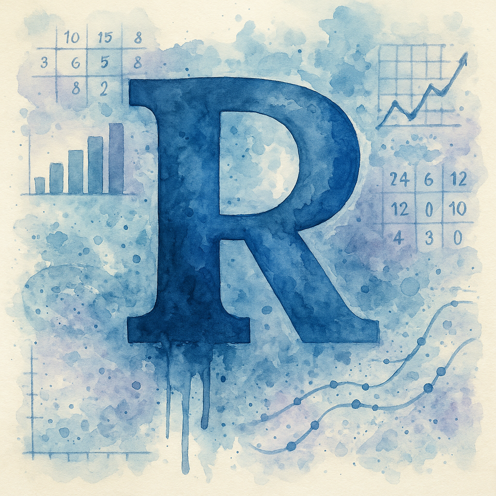

# Create sample data
survey_data <- data.frame(
Product = c("A", "B", "A", "C", "B", "A", "B", "C", "A", "A")
)
# Create frequency table
product_freq <- xtabs(~ Product, data = survey_data)
print(product_freq)Product
A B C
5 3 2 Steven P. Sanderson II, MPH
June 30, 2025
Programming, xtabs() in R, R programming, Cross-tabulation, Data analysis in R, Statistical modeling, R data manipulation, Creating contingency tables, Using xtabs for data summarization, R functions for data analysis, Data visualization in R, How to use xtabs() for cross-tabulation in R, Creating contingency tables with multiple variables using xtabs(), Step-by-step guide to using xtabs() in R for data analysis, Best practices for data summarization with xtabs() in R, Understanding the output of xtabs() in R for statistical analysis
Working with frequency tables is a common task in data analysis, and R provides several ways to create them. The xtabs() function stands out as a powerful tool that uses a formula interface to create contingency tables from your data. Whether you’re counting occurrences of categories or creating complex cross-tabulations, xtabs() makes the process straightforward and flexible.
In this guide, we’ll explore how to use xtabs() effectively, starting with basic syntax and moving through practical examples. You’ll learn how to create simple frequency tables, handle multiple variables, work with weighted data, and solve common problems that R programmers encounter.
The xtabs() function creates contingency tables (also called cross-tabulation tables or crosstabs) by counting combinations of factor levels in your data . Think of it as a way to summarize how often different combinations of categories appear together.
What makes xtabs() special is its formula interface. Instead of passing individual vectors like you would with table(), you can work directly with data frames using a simple formula notation .
Here’s the basic syntax for xtabs():
Let’s break down the main parameters:
~ var1 + var2 that describes which variables to cross-tabulateLet’s start with the simplest case - counting frequencies for one variable:
Now let’s look at relationships between two variables:
# Sample data with two variables
survey_data <- data.frame(
Gender = c("Male", "Female", "Male", "Female", "Male",
"Female", "Male", "Female", "Male", "Female"),
Product = c("A", "B", "A", "B", "C", "A", "B", "C", "A", "B")
)
# Create cross-tabulation
gender_product <- xtabs(~ Gender + Product, data = survey_data)
print(gender_product) Product
Gender A B C
Female 1 3 1
Male 3 1 1One of the biggest advantages of xtabs() over table() is how well it works with data frames . You don’t need to extract individual columns:
# More complex data frame
sales_data <- data.frame(
Region = c("North", "South", "North", "South", "North",
"South", "North", "South", "North", "South"),
Device = c("Mobile", "Desktop", "Mobile", "Mobile", "Desktop",
"Mobile", "Desktop", "Desktop", "Mobile", "Mobile"),
Sales = c(100, 150, 200, 120, 180, 90, 220, 160, 140, 110)
)
# Count by Region and Device
device_region <- xtabs(~ Device + Region, data = sales_data)
print(device_region) Region
Device North South
Desktop 2 2
Mobile 3 3Sometimes you need to sum values instead of just counting rows. xtabs() handles this by putting a variable on the left side of the formula:
# Sum sales by device type
sales_by_device <- xtabs(Sales ~ Device, data = sales_data)
print(sales_by_device)Device
Desktop Mobile
710 760 This sums the Sales values for each device type instead of just counting occurrences.
For a two-way weighted table:
xtabs() can handle multiple dimensions easily:
# Add a time period variable
sales_data$Period = c("Q1", "Q2", "Q1", "Q2", "Q1",
"Q2", "Q1", "Q2", "Q1", "Q2")
# Three-way table
three_way <- xtabs(~ Device + Region + Period, data = sales_data)
print(three_way), , Period = Q1
Region
Device North South
Desktop 2 0
Mobile 3 0
, , Period = Q2
Region
Device North South
Desktop 0 2
Mobile 0 3 Period Q1 Q2
Device Region
Desktop North 2 0
South 0 2
Mobile North 3 0
South 0 3The ftable() function creates a “flat” table that’s easier to read when you have three or more variables .
By default, xtabs() might exclude rows with missing values. To include them:
# Data with NA values
data_with_na <- data.frame(
Category = c("A", "B", NA, "A", "B", "C", NA, "A"),
Group = c("X", "Y", "X", "Y", "X", "Y", "X", "Y")
)
# Include NA as a category
with_na <- xtabs(~ Category + Group, data = data_with_na,
na.action = na.pass)
print(with_na) Group
Category X Y
A 1 2
B 1 1
C 0 1Setting na.action = na.pass ensures that NA values appear in your table .
When you need to select columns programmatically, use as.formula():
# Function to create frequency table for any column
create_freq_table <- function(data, col_name) {
formula_str <- paste("~", col_name)
xtabs(as.formula(formula_str), data = data)
}
# Use the function
my_col <- "Product"
result <- create_freq_table(survey_data, my_col)
print(result)Product
A B C
4 4 2 This technique is useful when building interactive applications or processing multiple columns.
The output of xtabs() is a special table object. To convert it for further analysis:
xtabs() only sums values, not averages them . To get means:
If your factors have levels with no data:
To create separate tables for each group:
Here’s a practice problem to test your understanding:
Problem: Given the following data frame, create a weighted frequency table showing total scores by student grade and subject. Then, calculate the average score for each grade-subject combination.
# Step 1: Create weighted frequency table (sum of scores)
score_sums <- xtabs(Score ~ Grade + Subject, data = student_data)
print("Sum of scores:")[1] "Sum of scores:" Subject
Grade Math Science
A 173 187
B 160 173
C 75 79# Step 2: Create count table
count_table <- xtabs(~ Grade + Subject, data = student_data)
print("\nCount of students:")[1] "\nCount of students:" Subject
Grade Math Science
A 2 2
B 2 2
C 1 1[1] "\nAverage scores:" Subject
Grade Math Science
A 86.5 93.5
B 80.0 86.5
C 75.0 79.0# Bonus: Convert to data frame for easier viewing
avg_df <- as.data.frame(avg_scores)
names(avg_df)[3] <- "AvgScore"
print("\nAs data frame:")[1] "\nAs data frame:" Grade Subject AvgScore
1 A Math 86.5
2 B Math 80.0
3 C Math 75.0
4 A Science 93.5
5 B Science 86.5
6 C Science 79.0Key Points to Remember:
~) to specify variables~ to count frequenciesdata = parameter to work directly with data framesna.action = na.pass to include NA values in tablesas.formula() for dynamic column selectionas.data.frame() for further processingftable() to display multi-dimensional tables clearlyThe xtabs() function provides a flexible and powerful way to create frequency tables in R. Its formula interface makes it particularly convenient when working with data frames, and its ability to handle weighted frequencies and multiple dimensions makes it suitable for a wide range of data analysis tasks.
Remember that while xtabs() excels at creating frequency and sum tables, you’ll need to combine it with other functions for more complex aggregations like means or medians. By mastering xtabs() alongside complementary functions like ftable() and data frame conversions, you’ll be well-equipped to handle any frequency analysis task in R.
Ready to put xtabs() to work? Start by applying it to your own datasets, experiment with different formula combinations, and don’t forget to explore how it integrates with your broader data analysis workflow!
Q1: What’s the difference between xtabs() and table()?
A: The main difference is that xtabs() uses a formula interface and works directly with data frames using the data = parameter, while table() requires you to pass individual vectors. xtabs() is generally more convenient for data frame operations.
Q2: Can xtabs() calculate percentages directly?
A: No, xtabs() creates count or sum tables. To get percentages, use prop.table() on the result: prop.table(xtabs(~ var1 + var2, data = mydata)).
Q3: How do I handle very large tables with xtabs()?
A: For large tables, set sparse = TRUE to return a sparse matrix, which uses less memory. This is especially useful when many combinations have zero counts.
Q4: Can I use xtabs() with continuous variables?
A: Yes, but you should first convert continuous variables to categories using cut() or similar functions. Otherwise, you’ll get a separate count for each unique value.
Q5: How do I save xtabs() output to a CSV file?
A: First convert to a data frame, then use write.csv(): write.csv(as.data.frame(my_xtabs), "output.csv").
Did this guide help you understand xtabs() better? We’d love to hear about your experiences using it in your R projects! Share your favorite use cases or any creative applications you’ve discovered in the comments below, or connect with us on social media to join the conversation with other R programmers.
https://stat.ethz.ch/R-manual/R-devel/library/stats/html/xtabs.html
https://www.r-bloggers.com/2023/06/mastering-data-aggregation-with-xtabs-in-r/
Happy Coding! 🚀

You can connect with me at any one of the below:
Telegram Channel here: https://t.me/steveondata
LinkedIn Network here: https://www.linkedin.com/in/spsanderson/
Mastadon Social here: https://mstdn.social/@stevensanderson
RStats Network here: https://rstats.me/@spsanderson
GitHub Network here: https://github.com/spsanderson
Bluesky Network here: https://bsky.app/profile/spsanderson.com
My Book: Extending Excel with Python and R here: https://packt.link/oTyZJ
You.com Referral Link: https://you.com/join/EHSLDTL6